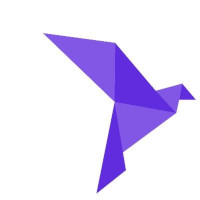

Découverte du language Roc
Posté le 15/07/2024 dans Roc
Programmation fonctionnelle
Ah, la programmation fonctionnelle !
Je me rappellerai toujours ma découverte de Haskell avec l'excellent livre Learn You a Haskell que je conseille à tout le monde de lire ! Les concepts derrière le langage ont été pour moi complètement mind blowing et je garde toujours dans un coin de tête l'idée d'immutabilité et de fonction pure quand je code.
Puis, est venu Elm qui a fait l'effet d'une bombe dans le monde du développement front-end. Alors évidemment, pas une bombe dans le sens où tout le monde l'a adopté, car il est finalement resté de niche. Mais il faut savoir que tous les fondamentaux derrière Redux et l'idée d'un store viennent directement d'Elm. Sans le savoir, la plupart des concepts qui sont dans ton framework préféré viennent d'Elm.
Alors quand j'ai vu que Richard Feldman, l'auteur de Elm in Action et l'un des plus gros contributeurs de la communauté Elm, se lance dans l'écriture de son langage, ça m'a forcément intrigué.
Roc lang
Roc se veut donc une sorte d'héritier d'Elm, mais ici on parle d'un langage backend et pas uniquement dédié au frontend.
Là où Elm et Haskell ont échoué, c'est-à-dire à être adoptés massivement, Roc essaye de mélanger programmation fonctionnelle et simplicité de gestion des effets de bord potentiels.
Il se veut être aussi simple à utiliser qu'un langage impératif pour la gestion des I/O et ça fait du bien.
Performance
On reproche souvent les mauvaises performances d'un langage fonctionnel. Ici, le compilateur et le tooling sont écrits intégralement en Rust, avec des bouts de Zig qui font leur apparition.
On est donc ici dans un langage qui peut compiler en code machine ou en WebAssembly comme Rust.
Installation
Au niveau de l'installation, il n'y a pas encore vraiment de packaging car le langage est tout récent. Donc on dézippe le tar.gz, on le met dans le path et on teste le REPL :
sudo apt install libc-dev binutils
wget https://github.com/roc-lang/roc/releases/download/nightly/roc_nightly-linux_x86_64-latest.tar.gz
tar -xf roc_nightly-linux_x86_64-latest.tar.gz
export PATH=$PATH:~/path/to/roc_nightly-linux_x86_64-<VERSION>
roc version
roc repl
Au final le langage ressemble à ça :
birds = 3
iguanas = 2
total = addAndStringify birds iguanas
main =
Stdout.line! "There are $(total) animals."
addAndStringify = \num1, num2 ->
Num.toStr (num1 + num2)
Tu noteras qu'on n'a pas besoin d'utiliser les parenthèses pour faire des appels de fonctions.
Ici l'utilisation d'un map :
List.map [1, 2, 3] \num -> num * 2
Je ne vais pas passer en revue tout le langage, pour ça tu peux lire le tutoriel. Mais on va voir les 2 ou 3 points intéressants.
Typage
Au niveau du typage, on est dans le typage statique que l'on peut décrire au-dessus de notre fonction via des annotations, comme pour Elm et Haskell. En vrac les exemples sortis du tutoriel :
fullName : Str, Str -> Str
fullName = \firstName, lastName ->
"$(firstName) $(lastName)"
Musician : { firstName : Str, lastName : Str }
amy : Musician
amy = { firstName: "Amy", lastName: "Lee" }
simone : Musician
simone = { firstName: "Simone", lastName: "Simons" }
names : List Str
names = ["Amy", "Simone", "Tarja"]
isEmpty : List * -> Bool
Mais sache que c'est optionnel car le langage intègre l'inférence de type, ce qui assouplit l'utilisation du langage. Ce qui veut dire que l'écriture suivante est valide :
fullName = \firstName, lastName ->
"$(firstName) $(lastName)"
Pattern matching
On peut faire du pattern matching sur des listes de manière très simple, ce qui est quand même super cool :
when myList is
[] -> 0 # the list is empty
[Foo, ..] -> 1 # it starts with a Foo tag
[_, ..] -> 2 # it contains at least one element, which we ignore
[Foo, Bar, ..] -> 3 # it starts with a Foo tag followed by a Bar tag
[Foo, Bar, Baz] -> 4 # it has exactly 3 elements: Foo, Bar, and Baz
[Foo, a, ..] -> 5 # its first element is Foo, and its second we name `a`
[Ok a, ..] -> 6 # it starts with an Ok containing a payload named `a`
[.., Foo] -> 7 # it ends with a Foo tag
[A, B, .., C, D] -> 8 # it has certain elements at the beginning and end
[head, .. as tail] -> 9 # destructure a list into a first element (head) and the rest (tail)
Pipe operator
On a l'opérateur pipe pour enchaîner les fonctions :
["a", "b", "c"]
|> List.reverse
|> List.append "d"
Tous les langages modernes devraient intégrer cet opérateur, c'est tellement plus lisible !
Debugger
Petit debugger intégré avec le mot-clé dbg qui permet de debugger facilement hors IDE à la manière d'un print avec des infos en plus :
pluralize = \singular, plural, count ->
dbg count
if count == 1 then
singular
else
plural
Gestion des erreurs
Ici on a une gestion des erreurs qui va rappeler Rust, en utilisant les mots-clés Ok et Err :
answer : Str
answer =
when Str.fromUtf8 definitelyValidUtf8 is
Ok str -> str
Err _ -> crash "This should never happen!"
Testing
Bien évidemment, comme tout langage qui se respecte, on peut écrire des tests unitaires avec le mot-clé expect :
pluralize = \singular, plural, count ->
countStr = Num.toStr count
if count == 1 then
"$(countStr) $(singular)"
else
"$(countStr) $(plural)"
expect pluralize "cactus" "cacti" 1 == "1 cactus"
expect pluralize "cactus" "cacti" 2 == "2 cacti"
Tasks
Bon, cette dernière partie est l'une des plus intéressantes. Je te parlais au début de l'article de la gestion simplifiée des I/O et des effets de bord. Ici, pas de Monad, mais un système de Task. Chaque plateforme implémente ses propres Tasks, ce qui permettra à terme de gérer les bases de données, les appels réseaux, les appels asynchrones (via le suffixe !) ou encore les fichiers de la même manière.
Ici un exemple un peu plus avancé de gestion de JSON :
app [main] {
cli: platform "https://github.com/roc-lang/basic-cli/releases/download/0.10.0/vNe6s9hWzoTZtFmNkvEICPErI9ptji_ySjicO6CkucY.tar.br",
json: "https://github.com/lukewilliamboswell/roc-json/releases/download/0.8.0/BlWJJh_ouV7c_IwvecYpgpR3jOCzVO-oyk-7ISdl2S4.tar.br",
}
import cli.Stdout
import cli.Task
import json.Core exposing [jsonWithOptions]
import Decode exposing [fromBytesPartial]
main =
requestBody = Str.toUtf8 "{\"Image\":{\"Animated\":false,\"Height\":600,\"Ids\":[116,943,234,38793],\"Thumbnail\":{\"Height\":125,\"Url\":\"http:\\/\\/www.example.com\\/image\\/481989943\",\"Width\":100},\"Title\":\"View from 15th Floor\",\"Width\":800}}"
decoder = jsonWithOptions { fieldNameMapping: PascalCase }
decoded : DecodeResult ImageRequest
decoded = fromBytesPartial requestBody decoder
when decoded.result is
Ok record -> Stdout.line "Successfully decoded image, title:\"$(record.image.title)\""
Err _ -> Task.err (Exit 1 "Error, failed to decode image")
ImageRequest : {
image : {
width : I64,
height : I64,
title : Str,
thumbnail : {
url : Str,
height : F32,
width : F32,
},
animated : Bool,
ids : List U32,
},
}
Et voilà pour cette introduction à Roc, j'espère t'avoir au moins intrigué !
Pour avoir une liste d'exemples plus avancés, tu peux jeter un oeil ici.
Et si tu viens du monde de Elm, il y a même un guide roc for elm programmers !